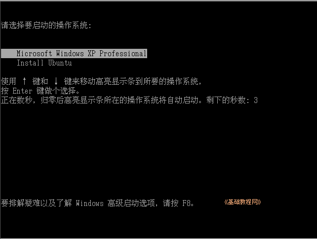
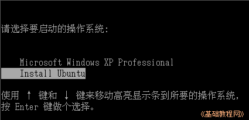
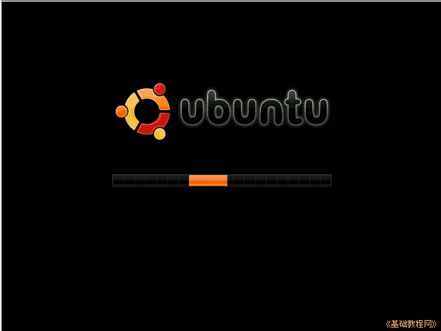
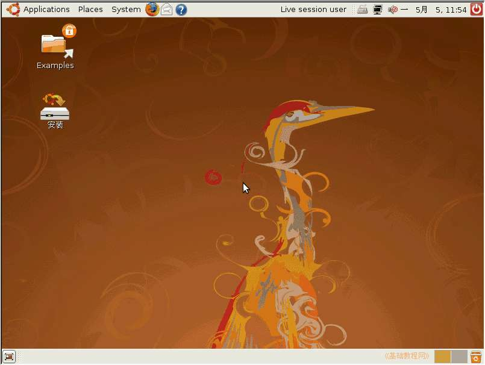
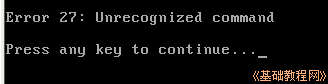
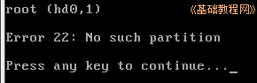
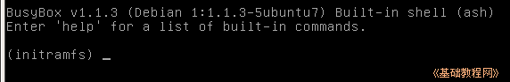
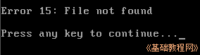

Ubuntu安装基础教程
作者：Teliute 来源：基础教程网
六、硬盘安装 返回目录 下一课接着第4课，我们继续用硬盘安装Ubuntu，这种方法是在启动菜单那儿选择Install Ubuntu，下面我们来看练 习；
1、启动菜单
1）重启动计算机，注意看着屏幕，当出现启动菜单时，按一下向下方向键；

2）这时候启动菜单的白条，到了第二行“Install Ubuntu”，按一下回车键继续；

3）然后屏幕出来一个滚动条，不停地来回晃动，稍等一会儿，就可以进入到Live CD桌面了；

4）进入live CD 桌面以后，如果分辨率太高，可以点“系统System－首选项－屏幕分辨率”，调整一下，具体方法见上一课；

2、常见问题
1）无法识别的命令，提示：Error 27: Unrecognized command ，仔细检查一下menu.lst中的每一行命令是否有错；

2）没有这个分区，提示：Error 22: No such partition，检查一下menu.lst中的root (hd0,0)这一行，是否有错误，
hd0是第一个硬盘，逗号后面的0是第一个主分区，4是第一个逻辑分区，括号前面有一个空格；

3)找不到镜像，或者镜像文件有问题，提示：BusyBox v1.1.3，出现(initramfs)错误，
试着换一个ISO镜像文件，或者把镜像文件放在一个FAT32/FAT16的分区里，同时修改root (hd0,0)的逗号后面的0为相应的分区；
另外也可以用错误提示在网上搜索一下，看看是否有其他解决办法；

4）找不到文件，提示：Error 15, File not found,
检查一下复制过去的5个文件是否足够，光盘镜像是否放在C:盘的根目录下面，
仔细检查一下是错误在哪一行，然后看看这一行里是什么文件；
本教程由86团学校TeliuTe制作|著作权所有
基础教程网：http://teliute.org/
美丽的校园……
转载和引用本站内容，请保留作者和本站链接。